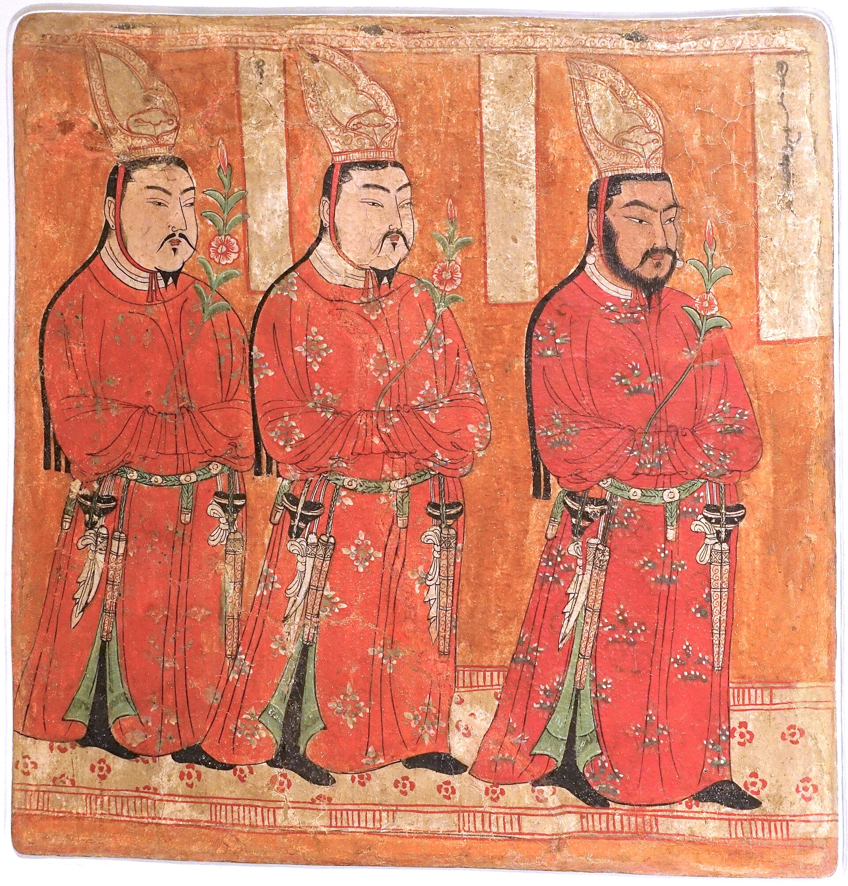

第 11 章
标签上的名字
阎文儒在柏孜克里克第9窟的壁面上发现了一处锯痕。那是1961年秋天。他率新疆石窟调查组进入这座火焰山下的石窟群时，德国探险队离开已经过去了将近半个世纪。锯痕从壁面左侧延伸至右侧，长约两米，深约一厘米，边缘整齐，显示出金属工具的锋利。锯痕上方，残留着一条宽约三厘米的赭石色颜料带——那是被割走的壁画最底部的色彩，像一道没有愈合的伤口。阎文儒蹲下来，用手指沿着锯痕走了一遍。然后他站起来，从助手手中接过记录本，在“保存状况”一栏写下：“壁画被割取。”
这四个字后来出现在1962年《文物》杂志刊登的调查报告《新疆天山以南的石窟》中。报告附有一张表格，每一行对应一个洞窟，列有编号、位置、形制、壁画题材、保存状况，以及两栏最重要的信息：“时代”与“风格”。在“柏孜克里克千佛洞第9窟”这一行，“时代”一栏填写的是“回鹘高昌时期（约公元10-11世纪）”，“风格”一栏标注着“回鹘风格，受汉风及龟兹风影响”。

表格中的每一个判断，都意味着一次命名。当学者们依据壁画中的人物服饰、构图方式、色彩运用，将其归入“回鹘风格”并断代于10至11世纪时，他们不仅是在描述，也是在定义。这一定义，连同“德系编号第1窟”、“斯坦因编号i窟”等过往的命名系统，共同构成了这处石窟在学术世界中的新坐标。
但表格中并未记录的是，当调查组抵达时，洞窟中许多壁画已被德国探险队割取。学者们面对的，是一个已然残缺的现场。他们的命名工作，既是对遗存的抢救性记录，也是在用学术范畴，为那些失去原境的碎片重建秩序。
这份表格是二十世纪中国佛教艺术研究的一个缩影。当大量文物因探险、劫掠、走私而流散海外，进入欧美日各国的博物馆与私人藏室时，它们与原生地点的物质联系被粗暴切断。随之而来的，是一个根本性问题：如何认识这些“无名”之物？学术研究承担起了为它们重新命名的职责。断代、风格归属、来源考证——这些看似客观的技术操作，实则是一套强大的解释体系。一尊佛像在被写入学术论文或展览图录之后，其身份从“某寺某窟的供奉对象”转变为“某风格某时期的代表作品”。这种转变，是解释权转移的关键环节。## 一
1915年，瑞典学者喜龙仁在巴黎见到了一尊菩萨立像。这尊像当时在古董商保罗·马龙（Paul Mallon）的店中。喜龙仁在笔记中记录了它的尺寸、材质、保存状况，然后写下一行判断：“姿态优雅，衣纹流畅，显示出中国雕塑黄金时代的最高成就。”他将其断代为“北齐至隋初，约公元580年前后”，并归入“河北地区风格”。这个判断后来被广泛引用，成为这尊菩萨立像在学术世界中的第一张身份证明。喜龙仁的判断建立在他对中国雕塑风格序列的掌握之上。
他观察了造像的面相特征——脸型方圆，眉弓平缓，眼睑厚重；分析了发髻样式——磨光肉髻，发髻线平直；研究了袈裟穿着方式——通肩式，衣纹为阴刻线。然后他将这些特征与已知年代的标准器进行比对，得出了“北齐至隋初”的结论。这套操作方法在当时的艺术史学界是规范性的。
1910年代至1930年代，一批开创性的著作相继问世：喜龙仁的《中国雕塑》（1925年）、阿斯顿的《中国雕塑导论》（1924年）、费舍尔的《中国佛教雕塑》（1922年）。这些著作构建了中国佛教雕塑的风格序列——从北魏的“古拙庄严”到唐代的“丰满圆润”，再到宋代的“世俗化倾向”。这个序列第一次为中国佛教雕塑提供了系统性的时间框架，使得散落各地的造像可以被纳入一个可比较、可分析的体系。
但喜龙仁当时并不知道这尊像来自天龙山。这个信息要等到1920年代，当天龙山石窟的照片开始在日本和欧洲的学术圈中流传，才有学者意识到，那尊“河北地区风格”的菩萨像，实际出自山西太原附近的山崖洞窟。它的断代也随之修正：不是北齐至隋初，而是晚唐至五代，约9世纪末至10世纪初。
修正的过程揭示了一个根本性的问题：当文物脱离原境，它的一切信息——地点、年代、功能、意义——都只能依靠学者的推测来重建。推测的依据是风格比较。
风格比较可以非常精密，但它的前提是拥有足够丰富的标准器作为参照。而二十世纪初的西方学者，对中国佛教造像的田野经验极其有限。喜龙仁在1920年代之前从未到过天龙山。他对“河北地区风格”的判断，依据的是当时已知的河北地区出土造像——那些造像本身的年代和来源也并非完全确定。
这是一个层层推测的系统。每一次推测都可能引入新的误差。当一尊像被从石窟中移出，它便失去了最可靠的断代依据——地层关系、共存遗物、题记铭文。学者只能从造像本身的形式特征入手，而这些特征在不同地区、不同匠作传统中的演变速率并不一致。同一个匠师家族可能在几十年间保持相似的技法，而两个同时代的匠师可能因师承不同而呈现出截然不同的风格。
风格序列将复杂的、非线性的历史过程简化为一条单线，这种简化是学术分析的必要前提，但简化本身就会丢失信息。喜龙仁的判断后来被修正了。但修正仍然发生在风格比较的框架之内。学者们没有找到这尊像的原始位置，没有发现相关题记，没有出土报告可供参考。
他们只是将比较对象从河北造像换成了天龙山造像，然后得出了一个不同的结论。这个结论可能更接近真实，但它仍然是推测。## 二
1927年，松本荣一收到了一份来自伦敦的包裹。寄件人是斯坦因，里面装着他在敦煌拍摄的壁画照片和一批绢画残片。松本荣一受雇为这些材料编写图录。他的工作方式是将每一件绢画与敦煌石窟中已知年代的壁画进行比对，依据菩萨的宝冠样式、供养人的服饰、榜题的书法风格，确定其制作年代和风格归属。
这项工作持续了十年。1937年，《敦煌画研究》出版，至今仍是敦煌绘画研究的奠基之作。
松本荣一从未去过敦煌。他所有的判断都基于照片和实物本身。他看不到壁画在洞窟中的位置——它在甬道还是主室，在穹顶还是四壁，与相邻壁画的图像程序如何衔接。他看不到光线从窟门射入时，壁画的不同部位在不同时间呈现出的视觉效果。他甚至看不到壁画的颜色在自然风化中的变化——照片是黑白的，拍摄时的光线条件完全由摄影师控制。
这些“看不到”的信息，恰恰是理解敦煌壁画的关键。敦煌的洞窟是一个完整的宗教空间。壁画不是独立的架上绘画，而是整个空间装饰的一部分。
主尊塑像、四壁壁画、窟顶藻井、地面铺砖，共同构成了一个曼荼罗式的宇宙图式。每一铺壁画的位置、朝向、与相邻图像的关系，都有其宗教含义。将其中一幅切割下来，装入画框，挂在博物馆的墙上——这种展示方式本身就消解了壁画原有的空间叙事。
松本荣一明白这一点。他在《敦煌画研究》的序言中写道，未能亲赴敦煌实地调查是深以为憾之事，本书所论皆基于照片与实物观察，疏漏在所难免。但他随即补充说，正因如此，他的研究必须更加严格地依赖风格比较和图像学分析，以弥补田野经验的不足。
这段自白触及了二十世纪上半叶东亚艺术史研究的一个结构性困境：最丰富的实物收藏在欧美日，最完整的原境信息在中国，而能够同时接触两者的学者少之又少。大多数研究者只能站在其中一端，通过间接材料去推测另一端。松本荣一站在收藏这一端。他用风格分析建立了一个完整的敦煌绘画分类体系，这个体系使散落在大英博物馆、吉美博物馆、艾尔米塔什博物馆的敦煌绘画获得了学术上的秩序。
但这个体系也强化了一种认知习惯：将敦煌绘画视为独立的、可移动的“作品”，而非石窟整体的一部分。这种认知习惯的影响是深远的。直到今天，大多数海外敦煌绘画的展览图录，仍然沿用松本荣一建立的分类方式：以时代和风格为主线，辅以题材分类。原境信息——出自哪个洞窟、位于哪个壁面、与哪些相邻图像构成组合——往往只出现在图录末尾的附录中，用一两行小字标注。对于大多数观众和读者来说，这些信息是他们不会注意到的。## 三
纽约大都会艺术博物馆的藏品卡片有一套标准格式。1954年，远东艺术部研究员艾伦·普里斯特为一件新入藏的佛首填写了这样一张卡片。佛首来自响堂山石窟，通过古董商卢芹斋购得。普里斯特在“年代”一栏填写了“北齐，约公元550-577年”，在“风格”一栏填写了“北齐样式，受印度笈多王朝影响”。
这个判断本身没有问题。响堂山石窟确为北齐皇室开凿，其造像风格确实显示出与印度笈多艺术的关联——面部饱满圆润，眼睑低垂，嘴角微含笑意。普里斯特的判断基于他对北齐造像标准器的熟悉，以及当时学术界对笈多风格东传路径的研究。
问题出在另一栏：“来源”。普里斯特填写的是“卢芹斋，纽约，1954年”。他没有写响堂山，也没有写河北省。
按照大都会艺术博物馆当时的藏品登记规范，来源一栏只需填写最近的交易方。至于这件佛首在到达卢芹斋手中之前的历史，不在登记范围之内。这个看似技术性的登记规则，实际上完成了一次来源信息的截断。
对于此后所有查阅这份藏品档案的研究者来说，这件佛首的“来源”是卢芹斋——一位声誉卓著的古董商。这个来源是合法的、体面的、符合市场规则的。至于卢芹斋从谁手中获得这件佛首，那个人又是如何得到的，这些信息被登记规则合法地省略了。
半个世纪后，当来源研究在欧美博物馆中兴起时，研究者们发现，许多中国佛教造像的来源链条在1940年代至1950年代的某个节点上中断了。中断的位置往往相同：从古董商到博物馆这一步是清晰的，从原址到古董商这一步是模糊的。登记规则为这种模糊提供了制度性的庇护。
普里斯特在1954年填写卡片时，未必有意隐瞒什么。他是一位严谨的学者，对中国艺术有深厚的感情。他在任期间大幅扩充了大都会艺术博物馆的中国雕塑收藏，并撰写了多部重要图录。他的断代和风格判断，至今仍有参考价值。
但正是这种“严谨”与“正常”，揭示了学术体系在文物再语境化过程中的深层作用。普里斯特所做的工作——断代、定名、风格分类——是学术性的，遵循当时的学术规范。
这些工作为佛首赋予了新的身份：它不再只是响堂山某窟某壁的一尊佛像的残件，而是“北齐风格的代表作品”，是“笈多影响在中国北方的重要例证”。这个新身份使它在博物馆的展线上获得了一个稳固的位置，也使它在学术讨论中成为一个可引用、可比较的案例。它原有的身份——响堂山第X窟主尊的佛首，由北齐皇室供养，位于窟内特定的空间关系中——被压缩为藏品档案中的一行附录文字，或者干脆被省略。
这不是普里斯特个人的疏忽。这是学术体系运作的必然结果。学术研究需要可比较的案例，需要可界定的风格范畴，需要可验证的年代判断。这些需求使得研究者天然地倾向于将文物从其具体语境中抽象出来，转化为类型学或风格学的样本。原境信息——具体的地点、特定的供养人、独特的宗教功能——在类型学框架中是不可比较的，因而在学术处理中容易被边缘化。## 四
一场学术争论在1964年冬天展开。争论的焦点是一尊藏于波士顿美术馆的唐代菩萨立像。该馆亚洲艺术研究员方腾在展览图录中将其断代为“唐代，约公元8世纪中期”，并指出其风格“接近洛阳龙门石窟的盛唐造像”。
次年，芝加哥大学艺术史系教授范德本发表书评，质疑这一断代。他认为该像的衣纹处理方式更接近山西天龙山石窟的晚唐作品，年代应在9世纪而非8世纪。
方腾随后在同一期刊上回应，坚持自己的判断。他列举了龙门石窟宾阳三洞中的几尊菩萨像作为比较对象，指出波士顿像的璎珞样式、裙褶处理和站姿重心，与这些龙门造像高度一致。范德本则进一步引用了天龙山第17窟的菩萨像作为反证，认为波士顿像的腰肢扭动幅度更大，面相更趋世俗化，这些都是晚唐特征。争论持续了两期，最终没有达成共识。
双方引用的都是可靠的比较材料，使用的都是规范的风格分析方法，得出的却是不同的结论。争论的核心问题其实不是年代，而是归属。
方腾的判断隐含着一个推论：这尊像可能出自龙门地区，是盛唐时期洛阳寺院或石窟的遗物。范德本的判断则指向另一个推论：它可能出自天龙山，属于晚唐时期山西地区的造像传统。两种归属意味着两种不同的历史叙事，两种不同的价值定位。
但两人都没有办法证明自己的归属判断。因为这尊像的来源信息极其有限：波士顿美术馆于1920年从一位日本古董商手中购得，此前的流传历史一片空白。没有发现记录，没有原始照片，没有任何可以追溯其出土或流出地点的线索。
方腾和范德本的所有论证，都建立在风格比较之上——而风格比较，正如这场争论本身所显示的，可以支持不同的结论。这场争论揭示了学术命名的一个根本局限：当文物脱离原境后，学者们试图通过风格分析来追溯其原属地点，这实际上是在用学术语言重建已经丧失的原境。这种重建可能非常精密，但终究是一种推测。它受制于现有比较材料的丰富程度、研究者个人的学术训练、甚至当时的学术潮流。
1970年代以后，随着中国田野考古的发展，越来越多的石窟寺和寺院遗址得到了系统调查。天龙山、响堂山、龙门、巩县等石窟的考古报告陆续出版，提供了大量带有明确地层关系和年代信息的标准器。这些新材料使得海外佛像的来源考证有了更可靠的参照系。一些此前的断代和归属判断被修正，一些长期悬置的争议有了定论。
但修正和定论仍然发生在学术体系的内部。它改变的是标签上的文字——从“唐代，约8世纪”改为“晚唐，约9世纪末”，从“龙门地区”改为“天龙山第17窟”。这些修正使标签更加精确，更加接近历史的真实。但它们仍然是标签，仍然是对文物身份的学术性定义。
一尊佛像最初被供奉时，它的身份不是由风格标签定义的。它的身份由它所处的寺院、它所面对的僧众、它所参与的仪式、它所体现的教义共同构成。供养人捐资造像，不是为了让后世学者分析其“衣纹处理方式”，而是为了积累功德、祈求福报。僧人在像前诵经，不是为了欣赏其“腰肢扭动幅度”，而是为了修行观想、证悟佛法。
这些宗教性的身份，在学术命名过程中被转化为风格学、类型学、图像学的范畴。转化是必要的，也是不可避免的——没有这种转化，现代学术就无法处理这些文物。但转化的同时，那些无法被范畴化的信息，便从标签上消失了。## 五
勒柯克在回忆录中详细描述过他的切割方法。1904年至1914年间，德国探险队四次进入新疆，在柏孜克里克、克孜尔、库木吐喇等石窟中切割了大量壁画。勒柯克写道，工人先用狐尾锯将壁画连同泥皮一起锯下，再分割成便于运输的小块，每一块编号、拍照、装箱。
他声称这样做的动机是“保护”——这些壁画在当地正遭受自然风化与人为破坏，如果不及时转移，将彻底毁灭。这个说法并非全无根据。当时新疆地区的石窟确实缺乏保护措施，当地居民有时也会刮取壁画上的金箔。
但“保护”的前提是“转移”——将壁画从洞窟转移到博物馆，从新疆转移到柏林。这种转移本身就是一种破坏：切割过程中壁画的边角碎裂，运输途中的颠簸造成新的裂痕，抵达柏林后的拼接常常出现错位。
更致命的破坏发生在二战末期。盟军轰炸柏林时，民族学博物馆遭到多次空袭。馆藏的柏孜克里克壁画有近三分之一被炸毁，其中包括勒柯克认为最为珍贵的几铺大型《说法图》。
这些壁画在新疆经历了数百年的风沙侵蚀，在切割和运输中幸存下来，最终毁于“保存之地”。为保存而切下，却毁于保存之地。这是一个苦涩的反讽。1985年，《文物》期刊刊登了《柏孜克里克千佛洞清理简记》。这份报告记录了1980年代初对柏孜克里克石窟的清理发掘成果。此时距离1961年的初次调查已经过去了二十年，距离德国探险队切割壁画则已经过去了近八十年。
报告中的表格沿用了1962年报告的格式，但在“保存状况”一栏中，许多洞窟的备注是相同的几个字：“壁画被割取”。那些标注着“壁画被割取”的洞窟，其“时代”和“风格”两栏仍然被填写得整整齐齐。学者们依据残留在壁面上的颜料痕迹、相邻洞窟的已知年代、以及德国探险队留下的照片和出版物，为这些已经失去壁画的洞窟完成了断代和风格归属。这项工作在学术上是严谨的，在情感上是沉重的。调查组的成员之一后来在回忆文章中写道，当他们走进那些空荡荡的洞窟，看到壁面上残留的锯痕和编号时，“心情无法平静”。
但他们仍然完成了测量、拍照、记录、断代。这些工作产出的表格和报告，成为此后所有关于柏孜克里克石窟研究的基础文献。学术命名在这里显现出它最坚韧的一面：即使对象已经残缺不全，甚至已经彻底毁灭，命名工作仍然可以进行。学者们可以通过间接材料——一张老照片、一段探险记录、一块残留的颜料——重建对象在学术体系中的位置。
这种重建不会让壁画回到墙上，但它确保了这些洞窟不会从学术记忆中消失。这种重建也确认了一个事实：最完整的实物在柏林（尽管部分被毁），最完整的原境信息在中国，两者永远无法合一。学术命名可以弥合信息层面的断裂，但无法弥合物体的断裂。标签上的文字可以描述一铺壁画的时代和风格，但无法让那铺壁画重新回到它被锯下的墙壁上。## 六
吉美博物馆的库房中有一尊小型铜鎏金佛像。1996年，一位中国学者在库房研究时发现了它。这尊像高不过二十厘米，佛陀结跏趺坐于莲台之上，右手施无畏印，左手执衣角。
博物馆的藏品卡片上标注着：“中国，唐代，约7-8世纪，来源不详”。她仔细观察了佛像的背光、台座和铸造工艺后，认为它并非唐代作品，而是十六国时期（4-5世纪）的造像，很可能出自河北地区。她的判断依据是：佛像的磨光肉髻、扁平的面部轮廓、程式化的衣纹处理，都符合十六国时期河北地区金铜佛的特征。而唐代金铜佛的面相更加饱满，衣纹更加写实，两者差异明显。
她将自己的发现写成论文，发表在次年的《文物》杂志上。吉美博物馆接受了这个修正。藏品卡片上的“唐代”被改为“十六国时期”，并加注了“可能出自河北地区”。这尊在库房中沉睡了数十年的小佛像，因为一个标签的修改，获得了新的学术生命。但“来源不详”四个字仍然留在卡片上。
这四个字意味着，无论断代如何精确、风格归属如何可靠，这尊佛像的原始出处永远无法确知。它出自哪座寺院？由谁供养？为何而造？如何流出中国？这些问题是标签无法回答的。学术命名可以赋予它一个时代和一个地域，但无法恢复它作为特定信仰物品的历史。
这种“精确的空白”在海外中国佛教造像中普遍存在。一件作品可以被精确断代为“北魏太和年间（477-499年）”，可以被准确归入“云冈模式第二期”，可以对其风格源流做出详尽分析——但关于它最初在云冈石窟中的位置，关于它与其他造像的组合关系，关于它的供养人和制作匠师，却是一片空白。精确与空白并存，这本身就是解释权转移的后果。
当文物脱离原境，关于它的信息被分解为两个部分：一部分是可以从物体本身读取的——材质、技法、风格、图像志；另一部分是必须依赖原境记录的——地点、位置、功能、社会关系。前者在学术体系中得到了充分的处理和强化，后者则在转移过程中逐渐流失。学术命名填补了前者造成的空白，却无法填补后者。
它创造出一种新的完整性——风格的完整性、年代的完整性、图像学的完整性——这种完整性在学术话语中是自足的，但它与原境之间的断裂是不可修复的。## 七
大都会艺术博物馆的一位策展人在编写展览标签时面临一个选择。那是2010年代。一件新入藏的响堂山佛首需要标签。这件佛首的来源信息比大多数同类藏品都要完整：它出自响堂山北洞，1914年被切割并运出中国，经过多位藏家之手，最终由一位美国慈善家捐赠给博物馆。策展人手中有一份详细的来源报告，记录了每一个环节的时间、地点和经手人。
问题在于，这些信息是否应该全部写入展览标签？按照博物馆的常规做法，展览标签上的来源信息通常只写最后一步：捐赠者姓名和年份。详细来源会收录在图录或学术论文中，供专业研究者查阅。这是出于空间和阅读体验的考虑——标签面积有限，观众停留时间短暂，过多的信息会干扰审美体验。
但这位策展人犹豫了。他知道这件佛首的来源涉及1910年代中国文物的非法流出问题。如果只写“某某捐赠，2015年”，这个标签在技术上是正确的，在伦理上却是一种遮蔽。它将一个有问题的获取过程，呈现为一个体面的捐赠行为。
最终，他在标签上加了一行字：“据考出自河北响堂山石窟北洞，1914年被移出原址”。这行字没有使用“盗凿”“掠夺”等带有道德判断的词汇，但它提供了一个关键信息：这尊佛首不是天然独立的作品，它是从一个特定地点被“移出”的。这个措辞选择在博物馆内部引发了一场小型讨论。
有人认为“移出”一词过于中性，回避了历史责任。有人则认为展览标签不是道德审判的场所，客观陈述事实即可。策展人本人在一次采访中说，他的目的不是谴责或辩护，而是“让观众知道，这件东西有一个故乡”。
“有一个故乡”——这个表述朴素而精确。它意味着这尊佛首不是博物馆收藏史中的一个孤立节点，而是一个更长故事的一部分。那个故事始于响堂山的山崖，经历切割、运输、转卖、捐赠，终于大都会艺术博物馆的展厅。标签上的那一行字，是对这个故事的一个简短提示。但这个提示的作用是有限的。
它告诉观众佛首“出自”响堂山，却无法告诉观众响堂山在哪儿、北洞是什么样子、佛首原来位于洞窟的哪个位置、它与窟内的其他造像如何构成一个整体。这些信息超出了标签的承载能力，也超出了大多数观众的知识背景。学术体系在这里遇到了它的边界。它可以提供精确的断代和风格分析，可以追溯来源链条的每一个环节，可以在图录和论文中详尽阐述原境信息。
但所有这些工作，都无法在展厅中重建那个已经丧失的原境。观众看到的，仍然是一尊孤立的佛首，放在玻璃柜里，打着柔和的灯光，旁边有一块标签。标签上的文字越来越精确，越来越诚实，越来越接近历史的真实。
但它终究只是一个标签。它不能替代洞窟，不能替代山崖，不能替代当年那些在佛前跪拜的信众的目光。每天晚上，博物馆的灯光熄灭。佛首在黑暗中保持着被标签定义的身份：北齐风格，响堂山北洞，某某捐赠。这些身份是真实的，也是残缺的。真实，因为每一个判断都有学术依据。
残缺，因为那个最初的身份——北洞主尊的一部分，北齐皇室供养的对象，信众礼拜的中心——已经永远留在了1914年被锯下的那一刻。标签上的名字，是学术体系为流散文物重建的身份。这个身份使它们能够在博物馆中安身，在学术讨论中被引用，在艺术市场中获得价值。
但这个身份，也是一种告别。当一尊佛像被写上“北齐风格”的那一刻，它就不再是那个特定寺院、特定洞窟、特定信仰实践中的佛了。它成为了一件“作品”，进入了艺术史的叙事，获得了普世性的价值——代价是，失去了地方性的记忆。这不是学者的错误，也不是博物馆的阴谋。这是文物脱离原境之后的必然命运。学术命名是对这种命运的应对，它挽救了信息，建立了秩序，赋予了新的意义。
但它无法逆转那个根本性的断裂。命名，便是在承认断裂已经发生的前提下，做最后的补救。1962年的那份表格，1985年的那份报告，普里斯特的藏品卡片，方腾和范德本的争论，吉美博物馆的标签修改，大都会艺术博物馆的那一行字——这些都是补救的一部分。
每一次命名，都是在断裂处打上一个标记。标记越来越密，越来越精确，但断裂本身，始终在那里。柏孜克里克的壁画残片还在柏林的库房里。响堂山的佛首还在纽约的展柜中。天龙山的菩萨像还在玻璃后面微微前倾。它们的姿态没有改变。菩萨依然低垂眼睑，佛陀依然施无畏印。它们接受所有标签，接受所有目光，接受所有灯光。它们不再属于任何特定的寺院，任何特定的洞窟，任何特定的供养人。它们属于艺术史。这是它们的荣耀，也是它们的流放。